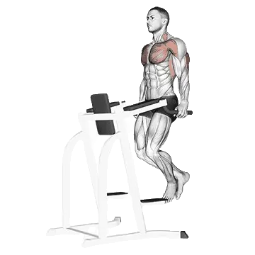

Dips
Dips é um exercício de braços focado em Tríceps braquial, Bíceps braquial, Peitoral inferior. Você pode revisar repetições médias e padrões de repetições em uma página.

Repetições médias: Intermediário
Referência para uma pessoa de nível intermediário.
Repetições médias de Dips
| Nível | ||
|---|---|---|
| Iniciante | < 1 | < 1 |
| Novato | 8 | < 1 |
| Intermediário | 20 | 10 |
| Avançado | 34 | 22 |
| Elite | 49 | 35 |
Nota: estes valores estimam repetições médias que podem ser feitas em uma série. Peso corporal, amplitude, tempo e outros fatores pessoais podem afetar o desempenho. Veja as tabelas detalhadas abaixo.
Seu nível atual
Confira seu nível em Dips
Compare as repetições de uma série com padrões por peso corporal.
Isto é uma estimativa. Técnica, amplitude e fadiga podem alterar o resultado. Ver método
Padrões de repetições de Dips
Homens por peso corporal (kg) [Repetições]
| Peso corporal | Iniciante | Novato | Intermediário | Avançado | Elite |
|---|---|---|---|---|---|
| 50 | < 1 | 7 | 19 | 34 | 50 |
| 55 | < 1 | 8 | 20 | 34 | 50 |
| 60 | < 1 | 9 | 20 | 34 | 49 |
| 65 | < 1 | 9 | 20 | 33 | 47 |
| 70 | < 1 | 9 | 20 | 33 | 46 |
| 75 | 1 | 10 | 20 | 32 | 45 |
| 80 | 1 | 10 | 20 | 32 | 44 |
| 85 | 2 | 10 | 20 | 31 | 43 |
| 90 | 2 | 10 | 19 | 30 | 42 |
| 95 | 2 | 10 | 19 | 29 | 41 |
| 100 | 2 | 9 | 18 | 29 | 40 |
| 105 | 2 | 9 | 18 | 28 | 39 |
| 110 | 2 | 9 | 18 | 27 | 38 |
| 115 | 2 | 9 | 17 | 27 | 37 |
| 120 | 2 | 9 | 17 | 26 | 36 |
| 125 | 2 | 9 | 16 | 25 | 35 |
| 130 | 2 | 9 | 16 | 25 | 34 |
| 135 | 2 | 8 | 15 | 24 | 33 |
| 140 | 2 | 8 | 15 | 23 | 32 |
Homens por idade [Repetições]
| Idade | Iniciante | Novato | Intermediário | Avançado | Elite |
|---|---|---|---|---|---|
| 15 | < 1 | 3 | 13 | 25 | 37 |
| 20 | < 1 | 8 | 19 | 32 | 47 |
| 25 | < 1 | 8 | 20 | 34 | 49 |
| 30 | < 1 | 8 | 20 | 34 | 49 |
| 35 | < 1 | 8 | 20 | 34 | 49 |
| 40 | < 1 | 8 | 20 | 34 | 49 |
| 45 | < 1 | 7 | 17 | 31 | 45 |
| 50 | < 1 | 5 | 15 | 27 | 40 |
| 55 | < 1 | 2 | 11 | 23 | 35 |
| 60 | < 1 | < 1 | 8 | 18 | 30 |
| 65 | < 1 | < 1 | 5 | 14 | 24 |
| 70 | < 1 | < 1 | 2 | 10 | 18 |
| 75 | < 1 | < 1 | < 1 | 6 | 13 |
| 80 | < 1 | < 1 | < 1 | 3 | 9 |
| 85 | < 1 | < 1 | < 1 | < 1 | 6 |
| 90 | < 1 | < 1 | < 1 | < 1 | 3 |
Mulheres por peso corporal (kg) [Repetições]
| Peso corporal | Iniciante | Novato | Intermediário | Avançado | Elite |
|---|---|---|---|---|---|
| 40 | < 1 | < 1 | 9 | 22 | 37 |
| 45 | < 1 | < 1 | 10 | 22 | 36 |
| 50 | < 1 | 1 | 10 | 22 | 34 |
| 55 | < 1 | 1 | 10 | 21 | 33 |
| 60 | < 1 | 2 | 10 | 21 | 32 |
| 65 | < 1 | 2 | 10 | 20 | 31 |
| 70 | < 1 | 2 | 10 | 19 | 30 |
| 75 | < 1 | 2 | 9 | 18 | 28 |
| 80 | < 1 | 2 | 9 | 18 | 27 |
| 85 | < 1 | 1 | 9 | 17 | 26 |
| 90 | < 1 | 1 | 9 | 16 | 25 |
| 95 | < 1 | 1 | 8 | 16 | 24 |
| 100 | < 1 | 1 | 8 | 15 | 23 |
| 105 | < 1 | < 1 | 8 | 14 | 22 |
| 110 | < 1 | < 1 | 7 | 14 | 21 |
| 115 | < 1 | < 1 | 7 | 13 | 20 |
| 120 | < 1 | < 1 | 6 | 12 | 20 |
Mulheres por idade [Repetições]
| Idade | Iniciante | Novato | Intermediário | Avançado | Elite |
|---|---|---|---|---|---|
| 15 | < 1 | < 1 | 5 | 15 | 26 |
| 20 | < 1 | < 1 | 9 | 21 | 34 |
| 25 | < 1 | < 1 | 10 | 22 | 35 |
| 30 | < 1 | < 1 | 10 | 22 | 35 |
| 35 | < 1 | < 1 | 10 | 22 | 35 |
| 40 | < 1 | < 1 | 10 | 22 | 35 |
| 45 | < 1 | < 1 | 9 | 20 | 32 |
| 50 | < 1 | < 1 | 7 | 17 | 28 |
| 55 | < 1 | < 1 | 4 | 13 | 24 |
| 60 | < 1 | < 1 | 1 | 10 | 19 |
| 65 | < 1 | < 1 | < 1 | 7 | 15 |
| 70 | < 1 | < 1 | < 1 | 3 | 10 |
| 75 | < 1 | < 1 | < 1 | < 1 | 7 |
| 80 | < 1 | < 1 | < 1 | < 1 | 3 |
| 85 | < 1 | < 1 | < 1 | < 1 | < 1 |
| 90 | < 1 | < 1 | < 1 | < 1 | < 1 |
Nota: os valores da tabela são referências de repetições possíveis em uma série. Dados por peso corporal ajudam a estimar carga relativa, e dados por idade ajudam a observar tendências.
Músculos trabalhados
| Grupo | Músculos |
|---|---|
| Músculos principais | Tríceps braquial, Bíceps braquial, Peitoral inferior |
| Músculos secundários | Deltoides |
| Estabilizadores | Reto abdominal |
| Pegada | Flexores do antebraço |
Registre e analise no app Shiba
Revise carga, repetições e progresso em um só lugar.
Recordes mundiais
Atualizado: July 2, 2026
Como ler a tabela
| Nível | Descrição | Distribuição |
|---|---|---|
| Iniciante | Aprendeu a forma correta e treinou consistentemente por pelo menos 1 mês. | Base 5% |
| Novato | Treinou consistentemente por pelo menos 6 meses. | Top 80% |
| Intermediário | Treinou consistentemente por pelo menos 2 anos. | Top 50% |
| Avançado | Treinou consistentemente por mais de 5 anos. | Top 20% |
| Elite | Treinou especificamente este exercício por mais de 5 anos. | Top 5% |